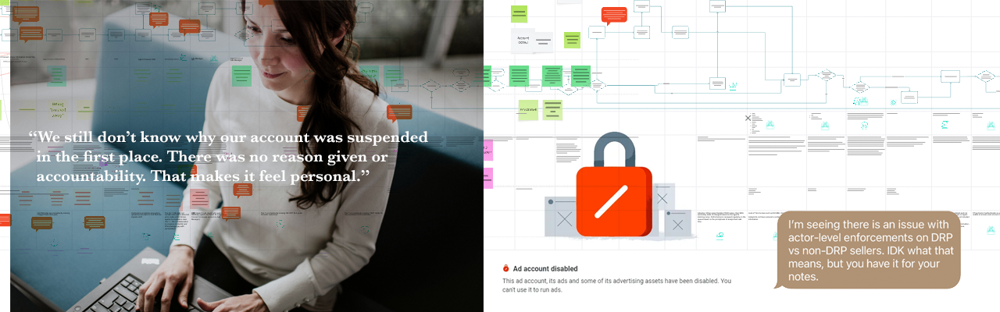

How we transformed a global ad platform's enforcement ecosystem from opaque policing to transparent partnership, empowering advisors to restore dignity and unlock $31.5B in potential revenue.
Small businesses built their livelihoods on our client's platform. Every ad dollar mattered. But when something went wrong, they were trapped in a maze of long wait times, opaque algorithm decisions and support agents with no real answers. Cases dragged on. Campaigns sat idle. For our client's customers that's not a tech support issue, its lost revenue and missed payroll.

One small business owner we interviewed, an MBA grad. running a small shoe company, put it bluntly: "When my account is blocked, my revenue is blocked." She was tech-savvy, data-driven and could run circles around most marketers in understanding performance metrics. But when her ads were blocked, she found herself staring at vague error messages and listening to advisors read lines they did not understand. Her talent and effort were not the problem. The system was.
For her, every day a campaign sat inactive was not an inconvenience. It was inventory that did not move and a payroll deadline creeping closer with no relief in sight.
Advertisers began to see our client less as a partner and more as a risk. Policy enforcement decisions were non-negotiable, and by design, they were not fully transparent. Our client could not reveal the rules of the system without making it easier for bad actors to exploit them. That is an operational reality. But the way it showed up for SMBs, with confusing messages, unexplained blocks, and stalled campaigns, left business owners feeling powerless.
I call it our "Sir, this is a Wendy's" moment. Think about that. A shoe company owner, who just wants to sell pumps, hears jargon she will never understand. It's not the advisor's fault that they don't understand it either. And while that conversation drags on, ad campaigns are stalled, revenue is blocked and the advisor's average handle time is climbing. That is not support. That is gibberish theater.
When we followed up with her later in the project she told us: "We still don't know why our account was suspended in the first place. When it was eventually restored there was no reason provided and no accountability. That made it feel personal."
That line cut to the heart of the problem. When businesses feel targeted by the very platform they depend on, trust does not just erode. It breaks.
In one of our most telling analyses, we found that 67% of case handling time was swallowed by process steps: entering notes, jumping between knowledge bases, escalating cases. Only 32% was true decision-making.
In one case, it took 33 separate process-oriented actions and 21 hours of handling time, only for the case to be closed with no resolution at all. Endless process, very little progress.
Advisors felt trapped too. They were smart, motivated people, but stuck playing messenger for system rules they were not allowed to interpret. Their performance metrics punished them for long calls. Every escalation added more time, more frustration and less trust.
And when trust collapses, the business model is at risk. In fact, projections showed our client standing to lose 14% of SMB revenue in 2023.
Our cross-functional team, led by CX Strategy & Design, set out to reframe the SMB support experience. The goal was not to dismantle the black box. It exists for good reasons. The work was about reducing its human and business impacts. SMB owners needed confidence that their livelihoods would not grind to a halt overnight because of an unexplained enforcement. Advisors needed tools that gave them credibility and clarity, not scripts they dreaded reading aloud.
We reframed the advisor role around agency, not scripts. By shifting repetitive, low-value work to AI, advisors had the freedom to listen, interpret, and guide. Instead of passing along jargon, they could act as partners who helped business owners navigate complexity with confidence.
The black box had to remain closed, but advisors no longer had to be trapped by it. We designed AI-driven alerts and natural language tools that translated policy outcomes into practical next steps. This gave advisors the ability to explain impacts in plain language and give SMBs clear choices, without exposing sensitive rules.
Empowerment also meant helping advisors build longer-term relationships. With tiered support, personalized education, and loyalty incentives, advisors could guide SMBs beyond troubleshooting into growth strategies. The shoe store owner would no longer hear nonsense lines; she would hear actionable advice, delivered by someone with the tools and authority to back it up.
It is tempting to think of SMB support as a cost to be minimized: faster handle times, lower case volumes, fewer escalations. But our work showed the real value came from something deeper. Trust and empowerment.
Empowerment means customers and advisors both have agency at the point of friction. For the shoe store owner, empowerment means she no longer has to live in fear that her business could be shut down overnight with no explanation. She has clear next steps and a sense of accountability. For advisors, empowerment means they are no longer passive facilitators of gibberish. They have the tools and authority to interpret complexity and guide decisions.
Trust follows when customers see that their effort leads to progress, and advisors see that their effort leads to impact. Without empowerment, both sides lose faith in the relationship.
In our modeling, this translated into durable business value. The six-year roadmap projected $624M in cost savings and $31.5B in potential incremental ad revenue.
Those gains were not the byproduct of efficiency alone, but the outcome of unlocking trust that drives growth. A trusted platform keeps small businesses investing through uncertainty. A trusted advisor keeps them connected even when policies are tough to swallow.
Empowerment is not soft. It is the foundation of trust. And trust is the foundation of B2B revenue.